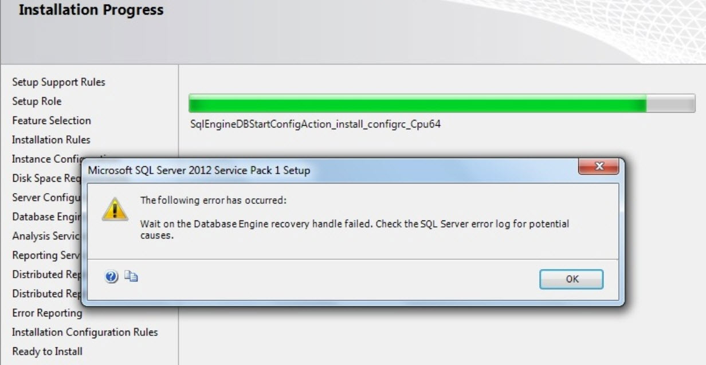

При установке MS SQL Server на контроллер домена (Windows Server 2012R2) возникает ошибка совершенно непонятного содержания:

Ошибка возникает из-за того, что при установке по умолчанию служба SQL Server запускается от пользователя, который отключен/не существует на контроллерах домена.
Решение:
1. Удалить SQL Server;
2. Запустить установку заново;
3. На экране "Server Configuration Screen" необходимо изменить учетные записи следующим образом: